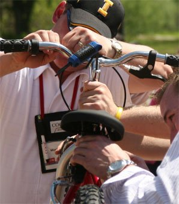

Search & Rescue
A team frozen in place, one shared lifeline of ropes, and survivors to reach — nothing moves unless everyone plays their part.
By James Carter, founder of Building Teams — 25+ years designing team-building experiences for hundreds of leadership teams. Updated July 2026.

What it is
A fishing boat has capsized in the frigid waters off the North Pole, and the survivors are stranded on icebergs, freezing. Your team’s job is to fly in a rescue plane, set it down on each iceberg in turn, and bring everyone home — through ice storms, white-outs and extreme winds. That’s the story. The reality on the ground is a circle no one may step inside, a single aircraft suspended from ropes threaded through a shared ring, and a group of people who, on the facilitator’s call of “freeze,” can no longer move their feet.
The art of cooperation is something we are taught as children, and something a surprising number of us leave at the front door of work. Search & Rescue puts it back in play. The task simply cannot be done by one person, or even by a talented few — the plane only flies when the whole team coordinates the ropes together. It is a vivid, hands-on demonstration of interdependence: proof that reaching the goal depends on people you have to trust to do their part, exactly the way work does, even when we’d rather believe we can carry it alone.
How it works
Three ropes run through a single ring at the center of a 60-foot circle, spreading outward like the spokes of a wagon wheel. The team gathers around the edge and is frozen in position — and where each person happens to be standing quietly determines how much they can contribute. By pulling and easing their rope, the group lifts the plane, carries it to each landing pad in turn, and unhooks and re-hooks it at every stop until all the survivors are aboard and the plane is home. Because feet are planted and the ring is shared, no one can act alone; every movement is a negotiation. (Full step-by-step setup, the storyline and the debrief questions are in the downloadable guide below.)
What it reveals: interdependence
The mechanics make the lesson unavoidable. One rope moving on its own does nothing useful; the plane only responds when tensions are balanced across all three lines at once. Some people, by luck of where they were frozen, hold a critical rope and feel the weight of the task; others find themselves with no rope and no obvious job. That split — between those who feel essential and those who feel sidelined — is the same one that plays out on real teams every day, and it becomes the richest material in the debrief. What does the person without a rope actually contribute? Often, it turns out, the observation, coaching and calm the rope-holders can’t supply while their hands are full.
What it reveals: communication
Clear communication and the accurate passing of critical information from one person to the next are the difference between a smooth landing and a plane that swings wildly and drops. Because people are frozen and facing different directions, the person who can see the landing pad often isn’t the person holding the rope that needs to move — so the instruction has to travel, intact, through several people first. This is where gaps show up fast: vague directions, everyone talking at once, the same phrase repeated louder instead of said a different way. The frustration that follows is real, and it fuels a long and honest conversation about how information moves — or fails to move — back at work.
What it reveals: coaching
Search & Rescue quietly separates the doers from the coaches. The people whose feet or positions leave them out of the physical task have a choice: disengage, or start coaching the ones holding the ropes. Watching that choice get made — and watching how the rope-holders receive being coached under pressure — is where the activity earns its place. The best teams discover that a good coach on the sideline, someone with a clear view who can feed calm, specific guidance to the people with their hands full, is every bit as valuable as the strongest puller. That is a directly transferable insight for any manager who has ever had to lead without touching the work themselves.
Interesting things to watch for
- People who feel they can’t contribute because they don’t hold a rope or weren’t frozen in a key spot — watch whether they disengage or find another way to help.
- The frustration levels of those who are coaching from the side or waiting on others to make a hookup.
- How the group responds when you change the rules mid-task or add an extra challenge — do they adapt or unravel?
- The range of communication styles that surface: who gives clear instructions, who goes quiet, who simply repeats themselves louder.
- Whether a leader emerges naturally, and whether the group actually listens once someone starts directing traffic.
- The moment the team stops working as individuals with separate ropes and starts moving the plane as one system.
Variations
The activity flexes to target different outcomes:
- More ropes, more people. Thread additional lines through the ring to involve a bigger group at once — it complicates the system and raises the coordination demand.
- Blindfolds or silence. Blindfold the rope-handlers, or put part of the group on silence, to create fresh communication obstacles and force real coaching.
- A hands-off leader. Appoint one leader who may not touch any of the props — they can only direct, which tests whether they can lead through others.
- Against the clock. Give a tight time limit (say ten minutes) and assign each landing pad a different rescue value, higher toward the harder center. The team must decide whether to chase one big, difficult site or several easy ones — a sharp simulation of how little time we really get to strategize, decide and execute.
Who it’s for
Search & Rescue suits groups of 6 to 24 and runs well outdoors or in an indoor space with plenty of room. It’s a strong fit for intact work teams looking to sharpen communication, surface coaching habits and feel — rather than just be told — how interdependent they really are. Medium energy and endlessly re-runnable with the variations, it’s a fun exercise that relates easily back to work and that groups tend to remember long after the day ends.
Questions to spark the debrief
The activity is the vehicle; the debrief is where the lesson lands. Questions we ask:
- Find a partner and share your first reaction to this event — and how that reaction shaped the way you took part.
- What was the one moment that stands out most, and what could you teach the rest of us about it?
- How did the quality of your communication affect the outcome, and how could it have been improved?
- For those who weren’t positioned well: how did it feel to be in a difficult spot, and what did you do about it?
- Where at work or in life do you see situations that feel like Search & Rescue?
- What might you change to get a different result next time?
Frequently asked questions
How many people is Search & Rescue for?
Search & Rescue is built for 6–24 people. We can scale the setup up or down to fit your group.
How long does Search & Rescue take?
Allow about 45–60 min (incl. debrief). Most of the real value comes from the debrief that follows.
Can Search & Rescue be run indoors or outdoors?
Inside and Outside, Inside with lots of room.
What does Search & Rescue teach a team?
It focuses on coaching, communication and leadership, and the debrief connects what happens in the activity directly to how your team works day to day.
Is there a free guide for Search & Rescue?
Yes. You can download a free step-by-step facilitation guide (PDF) for Search & Rescue from this page and run it yourself.
Want a facilitator to run Search & Rescue for your team? Explore our team building experiences and ongoing programs.